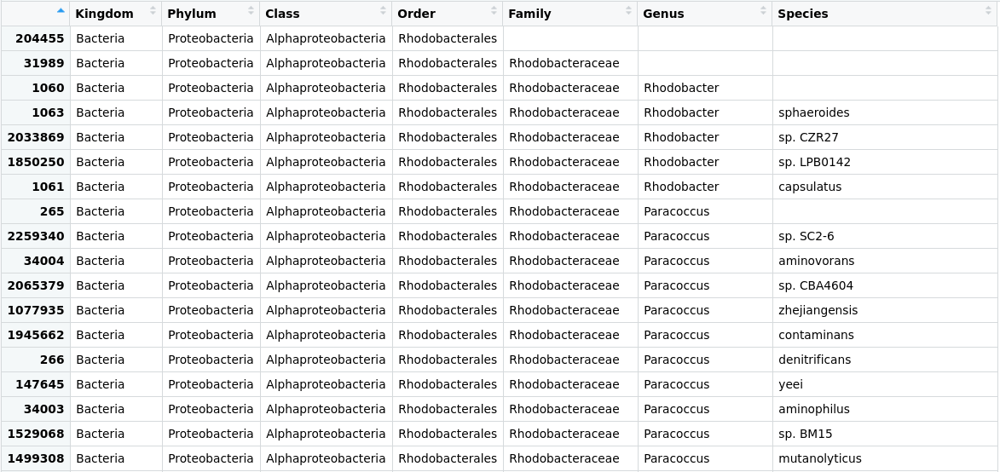

18 Análisis de taxonomía con R
18.1 Creación de tablas de linajes y asignación
Paquetes como Qiime2, MEGAN, Vegan o Phyloseq en R nos permiten analizar la diversidad y la abundancia mediante la manipulación de datos de asignación taxonómica. En esta lección, usaremos Phyloseq. Para ello, necesitamos generar una matriz de abundancia a partir de los archivos de salida de Kraken. Un programa muy utilizado para este propósito es kraken-biom.
Para ello, podríamos usar nuestra ya conocida terminal Bash, pero RStudio tiene una terminal integrada que usa el mismo lenguaje que aprendimos en las lecciones de línea de comandos, así que aprovechémosla. Abramos RStudio y vayamos a la pestaña Terminal en el panel inferior izquierdo.
18.2 Biom de Kraken
Kraken-biom es un programa que crea tablas BIOM a partir de la salida de Kraken.
Para ejecutar Kraken-biom, debemos movernos a la carpeta donde se encuentran nuestros archivos de datos taxonómicos:
$ cd ~/dc_workshop/taxonomy Primero, visualizaremos el contenido de nuestro directorio mediante el lscomando.
$ ls JC1A.kraken JC1A.report JP41.report JP4D.kraken JP4D.report mags_taxonomy La herramienta kraken-biom está instalada dentro de nuestro ambiente metagenomics, actívalo.
$ conda activate metagenomics Echemos un vistazo a las diferentes banderas que kraken-biomtiene:
$ kraken-biom -h usage: kraken-biom [-h] [--max {D,P,C,O,F,G,S}] [--min {D,P,C,O,F,G,S}] [-o OUTPUT_FP] [--otu_fp OTU_FP] [--fmt {hdf5,json,tsv}] [--gzip] [--version] [-v] kraken_reports [kraken_reports ...] Create BIOM-format tables (http://biom-format.org) from Kraken output (http://ccb.jhu.edu/software/kraken/). . . . Al observar detenidamente las primeras líneas de salida, se nota que necesitamos una salida específica de Kraken: el archivo .reports.
Con el siguiente comando, crearemos una tabla en formato Biom llamada cuatroc.biom . Incluiremos las muestras con las que hemos estado trabajando ( JC1Ay JP4D) y agregaremos un par de muestras más ( JP41) para poder realizar análisis específicos posteriormente.
$ kraken-biom JC1A.report JP4D.report JP41.report --fmt json -o cuatroc.biom Si inspeccionamos nuestra carpeta, veremos que el cuatroc.biomarchivo se ha creado. Este objeto biomcontiene la abundancia como el ID (un número) de cada OTU.
Con este resultado, estamos listos para volver a la consola de RStudio y empezar a manipular nuestros datos taxonómicos.
18.3 Creación y manipulación de objetos Phyloseq
18.3.1 Cargar los paquetes requeridos
Phyloseq es una biblioteca con herramientas para analizar y representar gráficamente la información de asignación taxonómica y abundancia de sus muestras metagenómicas. Instalemos Phyloseq (esta instrucción podría no funcionar en ciertas versiones de R) y otras bibliotecas necesarias para su ejecución:
> if (!requireNamespace("BiocManager", quietly = TRUE)) install.packages("BiocManager")
> BiocManager::install("phyloseq") # Install phyloseq
> install.packages(c("RColorBrewer", "patchwork")) #install patchwork to chart publication-quality plots and readr to read rectangular datasets. Una vez instaladas las bibliotecas debemos cargarlas o llamarlas (este proceso es necesario cada vez que iniciamos una nueva sesión de trabajo en R):
> library("phyloseq")
> library("ggplot2")
> library("RColorBrewer")
> library("patchwork") 18.3.2 Creando el objeto phyloseq
Le pedimos a R qué nos situe en el directorio taxonomy.
> setwd("~/dc_workshop/taxonomy/") Ahora debemos crear el objeto phyloseq con el comando import_biom:
> merged_metagenomes <- import_biom("cuatroc.biom") Inspeccionamos el objeto:
> class(merged_metagenomes) [1] "phyloseq" attr("package") [1] "phyloseq" El comando “class” indica que ya tenemos nuestro objeto phyloseq.
18.3.3 Explorando las etiquetas taxonómicas
Accedamos a los datos almacenados en el objeto merged_metagenomes. Dado que un objeto phyloseq es un objeto especial en R, necesitamos usar el operador @para explorar las subsecciones de datos dentro de merged_metagenomes. Si escribimos merged_metagenomes@, se muestran cinco opciones; tax_tabley otu_tableson las que usaremos. Después de escribir merged_metagenomes@otu_tableo merged_metagenomes@tax_table, la opción de .Data será la elegida en ambos casos. Veamos qué hay dentro de nuestro tax_table:
> View(merged_metagenomes@tax_table@.Data)
Los números en la columna de la izquiera (en negritas) identifican cada uno de los OTUs.
A continuación, eliminemos algunos de los caracteres innecesarios en el id de las OTU y pongamos nombres a los rangos taxonómicos usando la función substring(). Esta función es muy flexible, especialmente seleccionando caracteres de diferentes longitudes, como en este caso.
Cada carácter en .Dataestá precedido por tres espacios ocupados por una letra y dos guiones bajos, por ejemplo: o__Rhodobacterales. En este caso, “Rodobacterales” comienza en la posición 4 con una R. Por lo tanto, para eliminar los caracteres innecesarios, usaremos el siguiente código:
> merged_metagenomes@tax_table@.Data <- substring(merged_metagenomes@tax_table@.Data, 4)
> colnames(merged_metagenomes@tax_table@.Data)<- c("Kingdom", "Phylum", "Class", "Order", "Family", "Genus", "Species")
Usaremos un comando llamado unique()para explorar cuántos phylum tenemos. Veamos el resultado del siguiente código:
> unique(merged_metagenomes@tax_table@.Data[,"Phylum"])Conocer los filos es útil, pero lo que necesitamos saber es cuántas de nuestras OTU se han asignado al filo Firmicutes. Usemos el comando sum()para preguntarle a R:
> sum(merged_metagenomes@tax_table@.Data[,"Phylum"] == "Firmicutes")Ahora, para saber para ese filo en particular qué taxones hay en un determinado rango, también podemos preguntarle por phyloseq.
> unique(merged_metagenomes@tax_table@.Data[merged_metagenomes@tax_table@.Data[,"Phylum"] == "Firmicutes", "Class"])18.3.4 Explorando la tabla de abundancia
Hasta ahora, hemos analizado la parte del objeto phyloseq que almacena la información sobre la taxonomía (en todos los niveles posibles) de cada OTU presente en nuestras muestras. Sin embargo, también hay una parte del objeto phyloseq que almacena la información sobre cuántas lecturas secuenciadas correspondientes a una OTU específica hay en cada muestra. Esta tabla es la otu_table.
> View(merged_metagenomes@otu_table@.Data)
merged_metagenomes@otu_table@.Data["1077935",]JC1A JP4D JP41
42 782 257